Dudas Frecuentes
¿Todos los dioses en Egipto tienen apariencia de animal?
A pesar de que muchos conocen la apariencia de varios dioses, los cuales poseen cabeza de animal,hay muchos que no poseen dicha apariencia. Algunos de esos dioses son Osiris, Isis, Amón, etc.
Isis
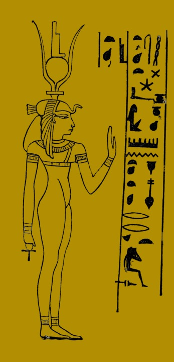
Osiris

Amon
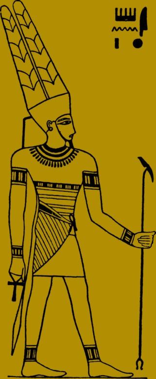
¿Quién es el dios de la momificación y patrón de las almas?
Anubis es el dios de la momificación, siendo hijo de Osiris y Neftis,y es quien guía las almas por la Duat y dirige el juzgado de las almas.
Anubis
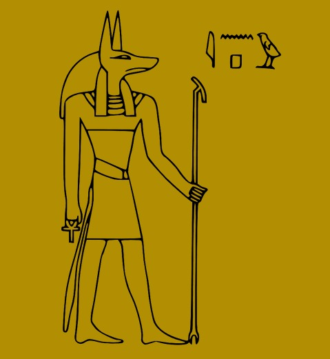
¿Dónde van las almas después de la muerte en la mitología egipcia?
El reino de los muertos era conocido como Duat, el cual estaba gobernado por Osiris.Dentro de la Duat se realizaba el juicio de los corazones, donde se decidía el destino de las almas de los muertos.

¿En qué consiste el Juicio de los corazones?
Anubis extraía mágicamente el Ib (el corazón, que representa la conciencia y moralidad) y lo depositaba sobre uno de los dos platillos de una balanza.El Ib era contrapesado con la pluma de Maat (símbolo de la Verdad y la Justicia Universal), situada en el otro platillo.
Dentro de la Duat se realizaba el juicio de los corazones, determinando el destino de las almas según el peso de su corazón.
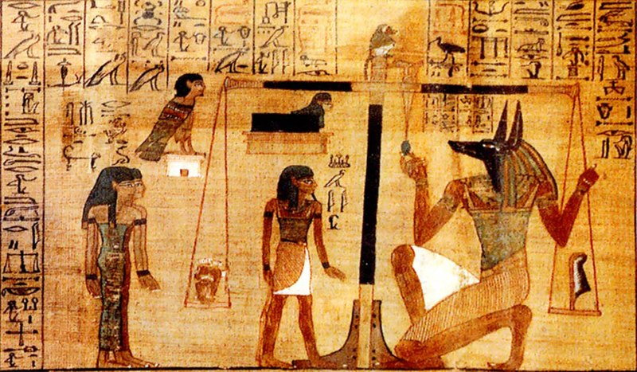
¿Cuáles eran las sentencias?
Si el Ib era menos pesado que la pluma de Maat,la sentencia era positiva y su Ka (la fuerza vital) y su Ba (la fuerza anímica) podían reunirse con la momia, conformar el Aj (el "ser benéfico") y vivir eternamente en los campos de Aaru (el Paraíso en la mitología egipcia).
Pero si el veredicto era negativo, y su Ib (corazón) era más pesado que la pluma de Maat, entonces este era arrojado a Ammyt, el devorador de los muertos, que acababa con él.
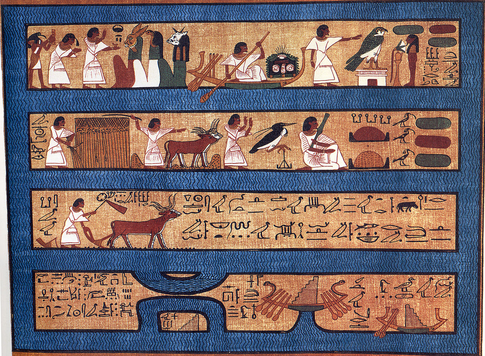
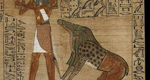
¿Qué dios tuvo más hijos en la mitología griega?
Poseidón, dios del mar, tuvo una gran cantidad de descendientes, tanto dioses y héroes como criaturas míticas y monstruos marinos.Algunos de sus hijos más conocidos incluyen el cíclope Polifemo, Tritón y varios otros seres. Por esta razón, Poseidón es considerado el dios con más hijos en la mitología griega.
 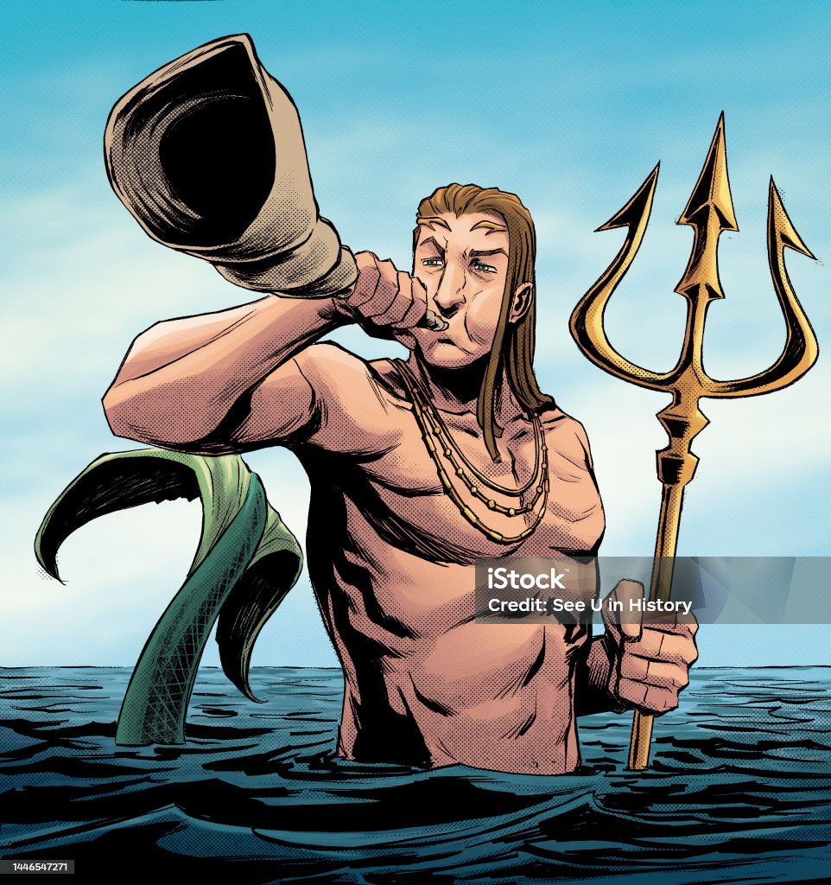
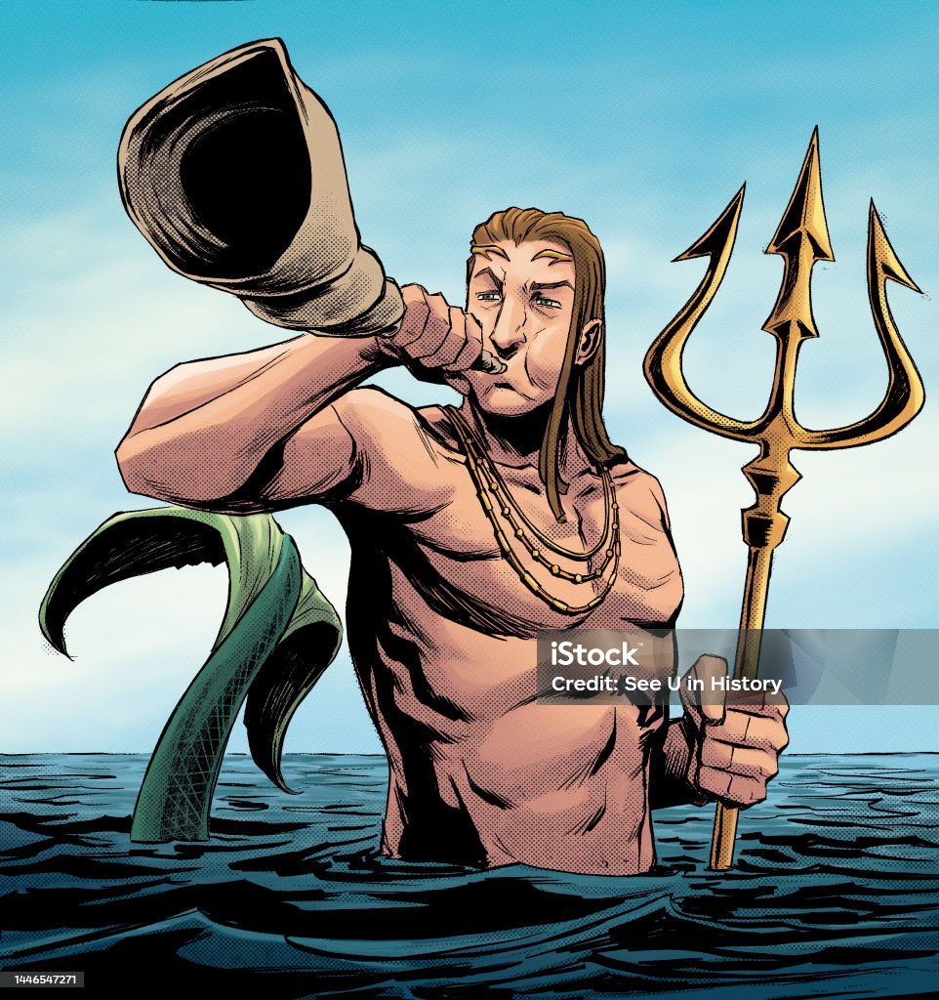
¿Qué dios es más leal a su pareja en la mitología griega?
Hades mostró lealtad y constancia hacia Perséfone tras raptarla y casarse con ella.A diferencia de otros dioses como Zeus, que tuvieron múltiples amantes y descendientes, Hades permaneció fiel a su esposa mientras compartían el reino del inframundo.

¿Cuál era el héroe más famoso?
Heracles (Hércules) es uno de los héroes más reconocidos de la mitología griega.Es famoso por su fuerza sobrehumana y los Doce Trabajos que realizó para redimirse, enfrentándose a criaturas míticas como la Hidra de Lerna, el León de Nemea, etc...
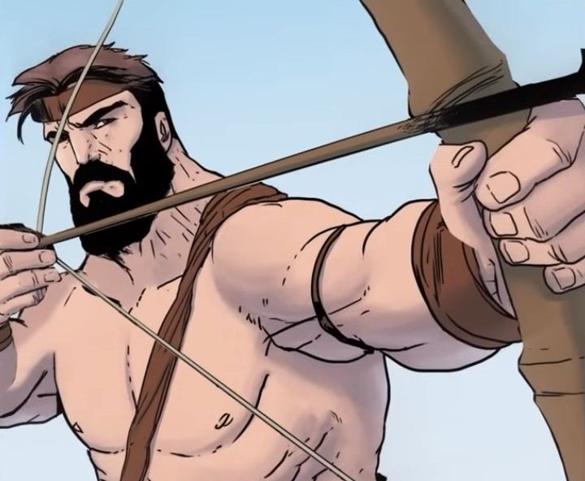
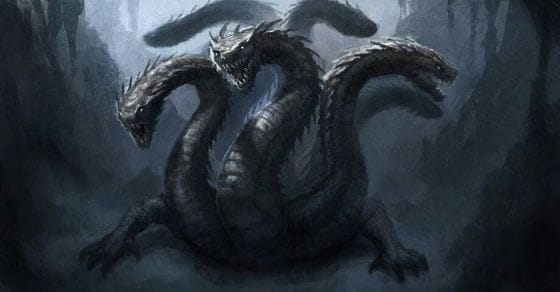
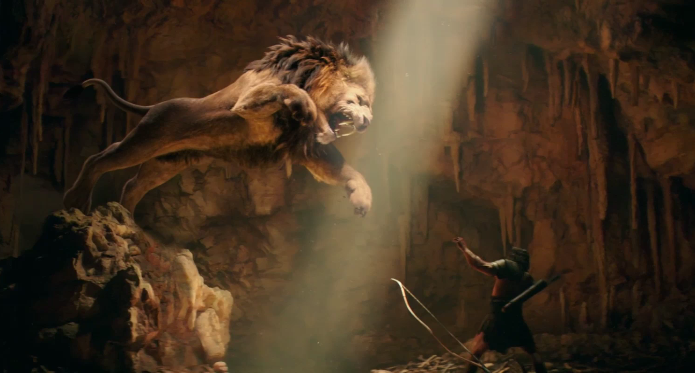